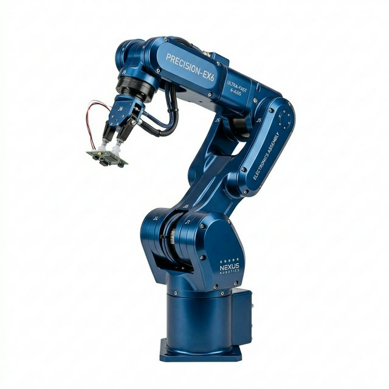
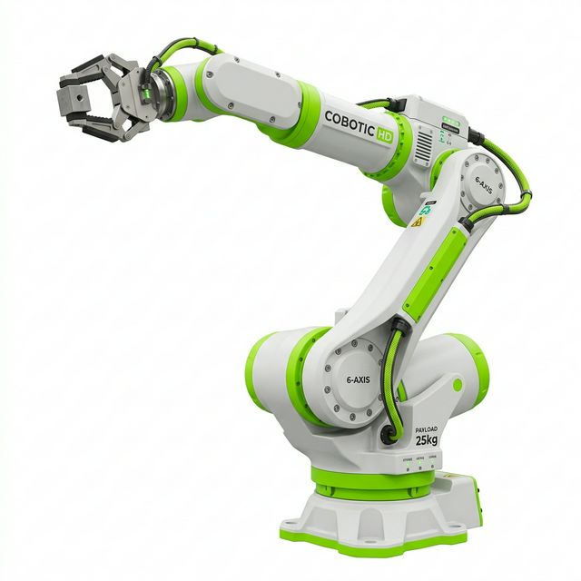

COBOT-Titan Heavy
극한 환경을 견디는 초대형 산업용 로봇 팔. 무거운 쇳물, 배터리 팩, 프레스 등 가혹한 공정에 최적화된 토크를 제공합니다.
| 탑재하중 (Payload) | 600 kg |
|---|---|
| 초정밀성 (Repeatability) | ± 0.05 mm |
압도적인 토크와 극정밀 제어력을 결합한 COBOT의 산업 및 협동 로봇 팔 라인업. 현대로보틱스의 강력한 모터와 두산로보틱스의 안전 제어 프레임워크를 흡수하여 모든 산업 현장의 니즈를 만족시킵니다.
COBOT의 로봇 암은 크기와 안전 등급에 따라 무한한 확장성을 품고 있습니다.
수백 개의 미세 보드가 흘러가는 컨베이어 벨트 위에서, 초고속 6축 제어를 통해 반도체나 초소형 PCB 기판 조립 리드타임을 파격적으로 줄여 수율을 극대화합니다.
방수방진(IP67) 설계와 강철 프레임워크로, 뜨거운 쇳물과 용접 스파크가 사방으로 튀는 극악의 환경에서도 24시간 오차 없이 라인을 가동시킵니다.
펜스(방어벽) 없이 인간과 한 공간에서 맞닿아도, 미세 충격을 스스로 인지하고 즉각 강제 정지하는 6D 토크 센서를 통해 서빙, 조리, 의료 기구 조작 등에 안전하게 쓰입니다.
극한 환경을 견디는 초대형 산업용 로봇 팔. 무거운 쇳물, 배터리 팩, 프레스 등 가혹한 공정에 최적화된 토크를 제공합니다.
| 탑재하중 (Payload) | 600 kg |
|---|---|
| 초정밀성 (Repeatability) | ± 0.05 mm |

전자, 부품 조립 픽앤플레이스를 위해 설계된 초고속 6축 소형 암. 엄청난 속도로 공정 사이클 타임을 찢어버립니다.
| 탑재하중 (Payload) | 7 kg |
|---|---|
| 초정밀성 (Repeatability) | ± 0.01 mm |

현시대 가장 완벽한 스마트 협동로봇. 관절 센서를 통해 외부 충격을 인지하며 코딩 없이 다이렉트 티칭이 가능합니다.
| 탑재하중 (Payload) | 15 kg |
|---|---|
| 안전보증 (Safety) | ISO 15066 |

인간 공조와 고하중 처리를 동시에 해결한 협동로봇의 끝판왕. 창고 물류 팔레타이징 시 사람의 근막 질환을 예방합니다.
| 탑재하중 (Payload) | 25 kg |
|---|---|
| 안전보증 (Safety) | ISO 15066 |